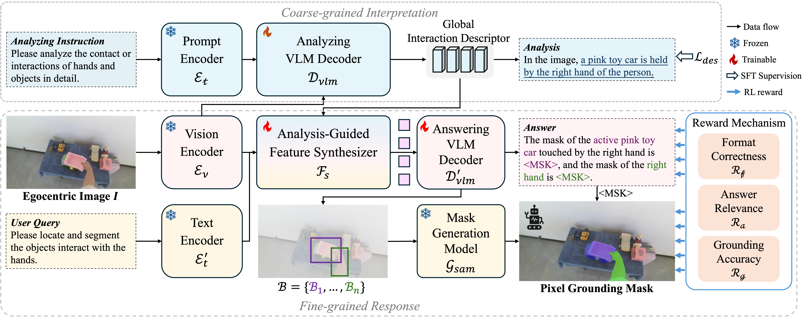
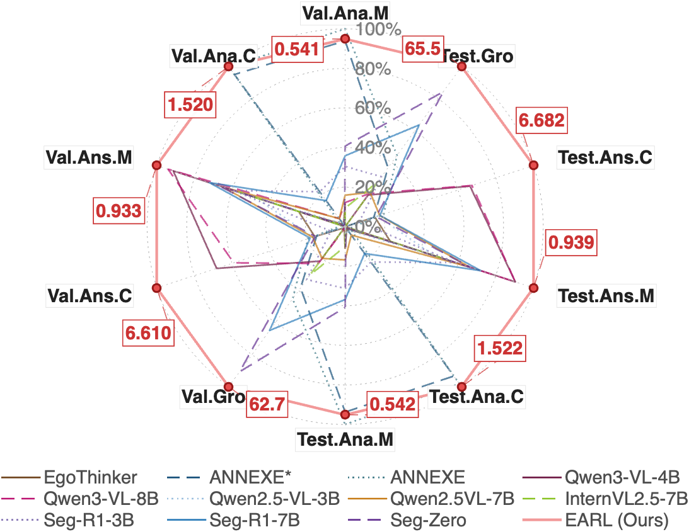
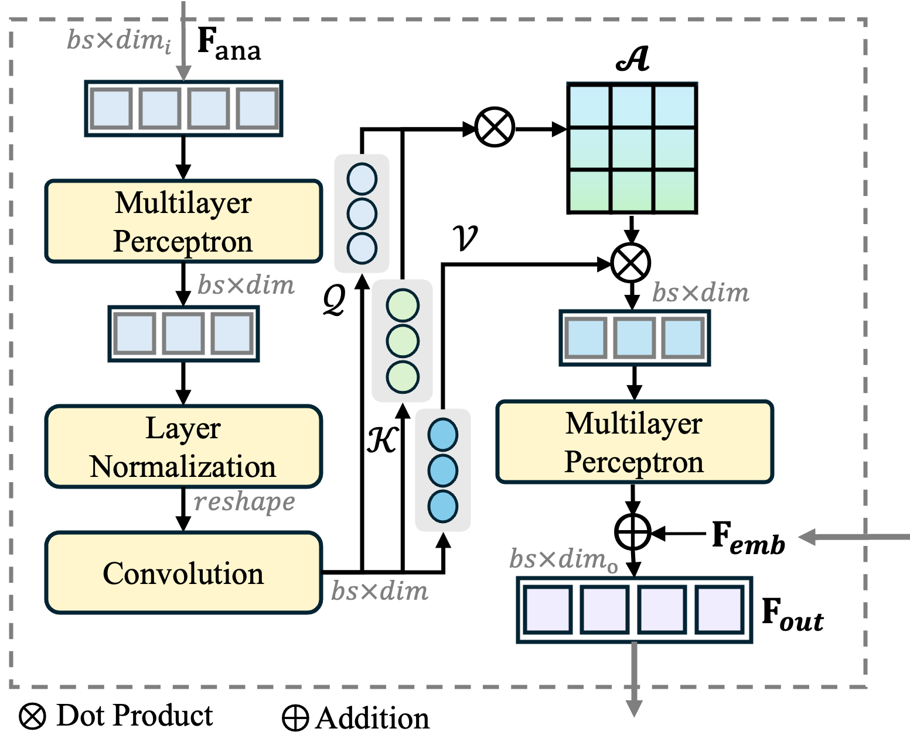
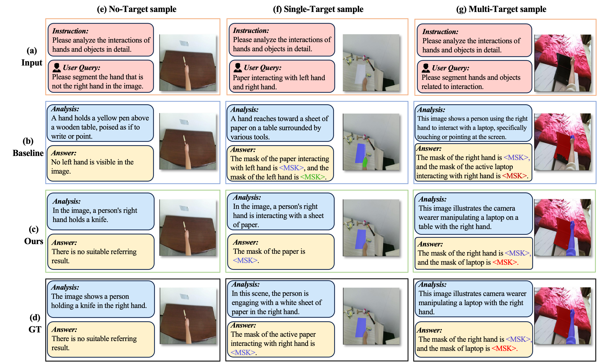
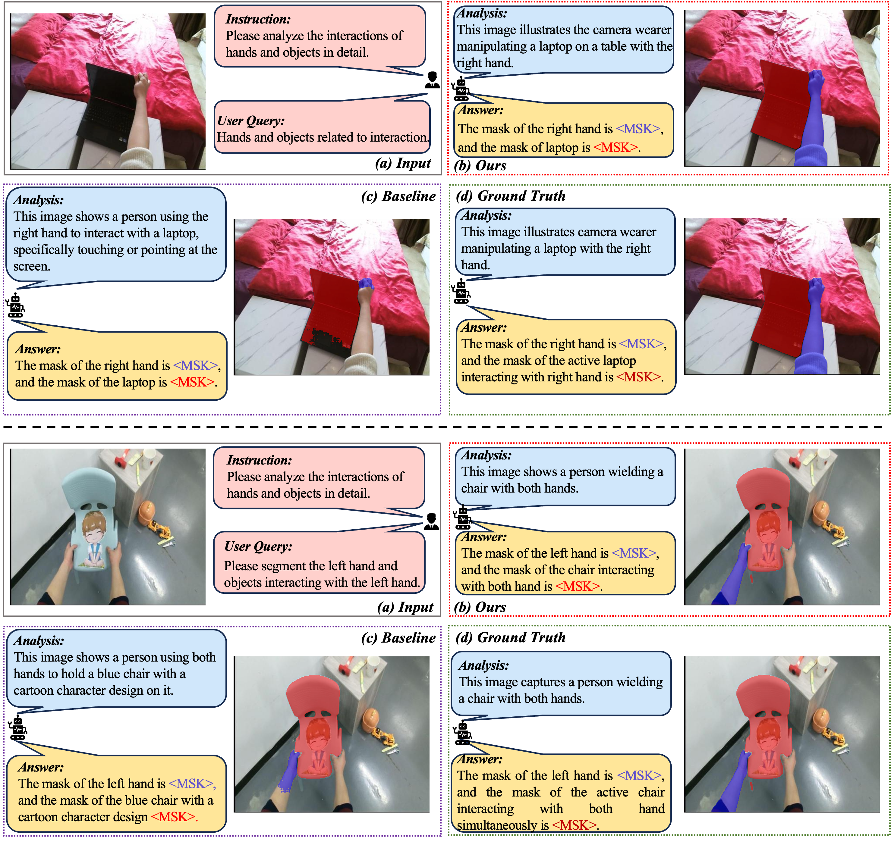

EARL: Towards a Unified Analysis-Guided Reinforcement Learning Framework for Egocentric Interaction Reasoning and Pixel Grounding
1The Hong Kong Polytechnic University 2The Hong Kong University of Science and Technology
* Equal contribution. † Corresponding author.

Abstract
Understanding human–environment interactions from egocentric vision is essential for assistive robotics and embodied intelligent agents, yet existing multimodal large language models still struggle with accurate interaction reasoning and fine-grained pixel grounding. EARL introduces an Egocentric Analysis-guided Reinforcement Learning framework that explicitly transfers coarse interaction semantics to query-oriented answering and grounding.
EARL adopts a two-stage parsing framework: a coarse-grained interpretation stage holistically analyzes egocentric interactions and produces structured textual descriptions, while a fine-grained response stage generates textual answers and pixel-level masks for user queries. A global interaction descriptor is integrated through an Analysis-guided Feature Synthesizer, and heterogeneous outputs are optimized through a multi-faceted reward function with GRPO.
Performance at a Glance
EARL improves egocentric interaction reasoning and fine-grained grounding on Ego-IRGBench and transfers to unseen egocentric grounding scenarios.

Main Quantitative Results
EARL is evaluated on Ego-IRGBench with three complementary abilities: interaction analysis, query answering, and pixel-level grounding. Best results are bolded, and second-best results are underlined.
| Model | Type | Test | Val | ||||||||
|---|---|---|---|---|---|---|---|---|---|---|---|
| Ana. M | Ana. C | Ans. M | Ans. C | cIoU | Ana. M | Ana. C | Ans. M | Ans. C | cIoU | ||
| General-domain MLLMs | |||||||||||
| Qwen3-VL-4B | Gen | 0.134 | 0.041 | 0.882 | 4.945 | 22.84 | 0.136 | 0.045 | 0.882 | 5.001 | 23.31 |
| Qwen3-VL-8B | Gen | 0.136 | 0.044 | 0.882 | 5.000 | 23.31 | 0.188 | 0.119 | 0.898 | 4.540 | 24.05 |
| Qwen2.5-VL-3B | Gen | 0.158 | 0.071 | 0.627 | 2.423 | 12.44 | 0.158 | 0.071 | 0.627 | 2.416 | 12.51 |
| Qwen2.5-VL-7B | Gen | 0.206 | 0.119 | 0.739 | 2.477 | 23.71 | 0.204 | 0.119 | 0.729 | 2.417 | 22.46 |
| InternVL2.5-7B | Gen | 0.177 | 0.044 | 0.681 | 1.533 | 27.21 | 0.176 | 0.047 | 0.679 | 1.547 | 27.70 |
| Egocentric MLLMs | |||||||||||
| EgoThinker | Ego | 0.182 | 0.061 | 0.491 | 2.344 | 12.33 | 0.184 | 0.065 | 0.495 | 2.364 | 12.87 |
| ANNEXE* | Ego | 0.536 | 1.423 | 0.350 | 2.317 | 31.90 | 0.537 | 1.447 | 0.352 | 2.312 | 31.72 |
| ANNEXE | Ego | 0.563 | 1.494 | 0.365 | 2.590 | 36.02 | 0.563 | 1.516 | 0.363 | 2.543 | 35.14 |
| Pixel-level Grounding MLLMs | |||||||||||
| Sa2VA-InternVL3-8B | Gen | 0.207 | 0.192 | 0.486 | 2.309 | 31.17 | 0.280 | 0.198 | 0.489 | 2.320 | 37.97 |
| Sa2VA-8B | Gen | 0.188 | 0.115 | 0.754 | 2.656 | 32.69 | 0.189 | 0.120 | 0.448 | 2.644 | 34.89 |
| UniPixel-7B | Gen | 0.165 | 0.075 | 0.158 | 1.136 | 14.01 | 0.168 | 0.065 | 0.155 | 1.128 | 13.63 |
| Reinforcement Learning-based General Segmentation MLLMs | |||||||||||
| Seg-R1-3B | Gen | 0.268 | 0.368 | 0.696 | 1.914 | 28.91 | 0.266 | 0.367 | 0.695 | 1.929 | 29.08 |
| Seg-R1-7B | Gen | 0.292 | 0.289 | 0.774 | 2.483 | 46.10 | 0.289 | 0.285 | 0.771 | 2.488 | 45.05 |
| Seg-Zero | Gen | 0.309 | 0.049 | 0.742 | 2.380 | 57.11 | 0.310 | 0.052 | 0.740 | 2.349 | 58.03 |
| EARL (Ours) | Ego | 0.542 | 1.522 | 0.939 | 6.682 | 65.48 | 0.541 | 1.520 | 0.933 | 6.610 | 62.71 |
| vs. best / second-best | Δ | -0.021 | +0.028 | +0.057 | +1.682 | +8.37 | -0.022 | +0.004 | +0.035 | +1.609 | +4.68 |
Out-of-Distribution Grounding
EARL generalizes to EgoHOS, an out-of-distribution egocentric hand-object segmentation setting. The table reports category-wise IoU and overall cIoU.
| Method | Type | Left Hand | Right Hand | Left-hand Obj. | Right-hand Obj. | Two-hand Obj. | cIoU |
|---|---|---|---|---|---|---|---|
| Referring Image Segmentation Methods | |||||||
| X-Decoder | Gen | 18.19 | 20.68 | 5.37 | 7.99 | 11.21 | 12.69 |
| GSVA | Gen | 20.69 | 23.18 | 5.37 | 7.79 | 9.02 | 13.21 |
| GRES | Gen | 20.49 | 22.98 | 7.22 | 8.64 | 10.87 | 14.04 |
| LISA | Gen | 28.93 | 33.06 | 14.27 | 17.94 | 18.10 | 22.46 |
| General-domain MLLMs | |||||||
| InternVL3-8B | Gen | 12.78 | 9.97 | 4.65 | 0.06 | 3.09 | 6.11 |
| Qwen2.5-VL-3B | Gen | 5.95 | 23.54 | 0.18 | 0.54 | 0.47 | 6.14 |
| Qwen3-VL-4B | Gen | 15.68 | 9.16 | 5.79 | 4.24 | 6.83 | 8.34 |
| Qwen2.5-VL-7B | Gen | 23.20 | 16.45 | 4.74 | 5.82 | 12.58 | 12.56 |
| Qwen3-VL-8B | Gen | 30.70 | 27.75 | 14.16 | 20.53 | 26.61 | 23.95 |
| Egocentric MLLMs | |||||||
| EgoThinker | Ego | 29.33 | 25.09 | 14.01 | 15.81 | 22.84 | 21.42 |
| ANNEXE | Ego | 25.84 | 26.21 | 16.24 | 15.86 | 22.75 | 21.38 |
| Pixel-level Grounding MLLMs | |||||||
| Sa2VA-8B | Pix | 48.56 | 45.82 | 26.91 | 26.77 | 37.04 | 37.63 |
| Sa2VA-InternVL3-8B | Pix | 41.24 | 41.47 | 25.95 | 26.54 | 37.45 | 34.08 |
| UniPixel-7B | Pix | 28.54 | 24.82 | 11.12 | 12.45 | 19.06 | 21.14 |
| Reinforcement Learning-based General Segmentation MLLMs | |||||||
| Seg-Zero | Gen | 33.28 | 30.56 | 15.86 | 14.75 | 33.28 | 25.55 |
| Seg-R1-3B | Gen | 37.72 | 30.76 | 21.17 | 21.97 | 27.23 | 27.77 |
| Seg-R1-7B | Gen | 41.47 | 40.08 | 29.86 | 28.40 | 34.94 | 34.95 |
| EARL (Ours) | Ego | 52.30 | 62.44 | 19.10 | 20.57 | 22.85 | 38.21 (+0.58) |
Method
EARL follows an analysis-guided coarse-to-fine design. The first stage produces a global interaction descriptor from the egocentric scene, while the second stage uses the descriptor as a semantic prior for query-specific answer generation and mask prediction.
The key component is the Analysis-guided Feature Synthesizer, which fuses interaction-level semantics with fine-grained visual features to support heterogeneous outputs including textual answers, boxes, and segmentation masks.

Ablation and Training Design
The ablation study shows that both reinforcement learning and the Analysis-guided Feature Synthesizer are important for the final performance, especially for pixel grounding.
| Method | Analysis | Answering | Grounding | |||
|---|---|---|---|---|---|---|
| Train | Fusion | M | C | M | C | cIoU |
| SFT | -- | 0.538 | 1.421 | 0.362 | 2.339 | 32.47 |
| SFT | AFS | 0.540 | 1.457 | 0.498 | 4.313 | 43.85 |
| RL | -- | 0.370 | 0.927 | 0.441 | 2.703 | 39.81 |
| RL | Concat | 0.398 | 1.132 | 0.443 | 2.715 | 39.88 |
| RL | Sum | 0.449 | 1.378 | 0.674 | 2.807 | 37.14 |
| RL | MLP | 0.371 | 1.290 | 0.412 | 2.701 | 37.29 |
| RL | CAF | 0.502 | 1.487 | 0.790 | 5.241 | 52.36 |
| RL | AFS | 0.542 | 1.522 | 0.939 | 6.682 | 65.48 |
| # | λf | λa | λg | Ana. M | Ana. C | Ans. M | Ans. C | cIoU |
|---|---|---|---|---|---|---|---|---|
| 1 | 1 | 1 | 0 | 0.539 | 1.518 | 0.926 | 6.380 | 37.99 |
| 2 | 1 | 0 | 1 | 0.541 | 1.520 | 0.852 | 4.862 | 58.22 |
| 3 | 0.5 | 1 | 1 | 0.539 | 1.520 | 0.921 | 6.356 | 69.87 |
| 4 | 1 | 1 | 1 | 0.542 | 1.522 | 0.939 | 6.682 | 65.48 |
Although setting λf=0.5 gives the highest grounding cIoU in this sweep, λf=λa=λg=1 is used as the balanced setting for analysis, answering, and grounding.
Inference Case Comparison
EARL produces both textual reasoning outputs and pixel-level grounding masks, enabling direct comparison with previous MLLM and RL-based grounding methods in egocentric interaction scenarios.

Additional Model Inference Cases
Supplementary visualizations showing additional EARL inference cases.


BibTeX
@article{su2026earl,
title={EARL: Towards a Unified Analysis-Guided Reinforcement Learning Framework for Egocentric Interaction Reasoning and Pixel Grounding},
author={Su, Yuejiao and Zhang, Xinshen and Ye, Zhen and Yao, Lei and Chau, Lap-Pui and Wang, Yi},
journal={arXiv preprint arXiv:2605.14742},
year={2026}
}